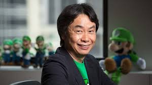

|  | Nintendo’s history begins with its founder, Fusajiro Yamauchi, who established the company in 1889 in Kyoto, Japan,
initially as a playing card business specializing in Hanafuda cards. Under his leadership, Nintendo built a reputation for quality craftsmanship,
laying the foundation for future growth. |
|---|
Hiroshi Yamauchi took the reins of Nintendo in 1949, at just 22 years old, and led the company through a period of radical transformation.
Under Hiroshi’s leadership, Nintendo diversified into various ventures before focusing on electronic entertainment, which led to the creation of iconic franchises like Super Mario,
The Legend of Zelda, and Donkey Kong. |
 |
|---|
 |
Following Hiroshi Yamauchi, Satoru Iwata became the first Nintendo president not related to the founding family,
taking over in 2002. With a background in game development, Iwata brought a new perspective to Nintendo, leading to the creation of groundbreaking products like
the Nintendo DS and Wii, which were hugely successful due to their innovative gameplay. |
|---|
Tatsumi Kimishima succeeded Iwata and served as president from 2015 to 2018. His leadership was marked by a focus on
financial stability and guiding the company through a transition period, which included the successful launch of the Nintendo Switch. |
 |
|---|